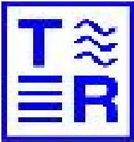
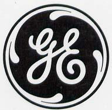
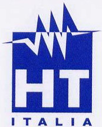
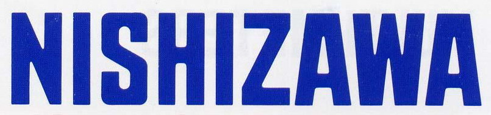

|
|
|
|
項次 |
內 容 簡 介 |
|
一 |
6 1/2精密電錶、頻譜分析儀、精密電力分析儀、函數波產生器、頻率計數器、儲存式示波器、類比式示波器、可程式電阻測量儀、LCR測試器、安規測試器、直流電源供應器、交流變頻電源供應器、直流高壓計、差動探針等。 |
|
二 |
電磁場計、磁通計、靜電高壓計、瓦斯偵測器、冷媒探漏器、CO偵測器、四用氣體偵測器、照度計、噪音計、振動計、光電轉速計、閃頻測速器、測距儀、風速風溫計、溫濕度計、溫度蒐集器等。 |
|
三 |
液壓式重錘壓力校正器，空氣式重錘壓力校正器，可攜式重錘壓力校正器、數字式壓力校正器、多功能壓力校正器， |
|
四 |
各式溫度信號測量與校正器，一般使用至高精密等級。紅外線測溫器、紅外線熱像儀、精密數字溫度計、乾式及液槽溫度校正爐等。 |
|
五 |
各種範圍十進位電阻箱、RTD模擬電阻箱、單體標準電阻器、多範圍標準電阻器、絕緣高電阻校正器、 分析記錄器、多功能溫度打點記錄器、筆式記錄器、溫濕度記錄器、免紙記錄器、電壓電流記錄器、洩漏電流記錄器、異常電壓記錄器、變壓器負載電流記錄器等。 |
|
六 |
電流轉換器、AC測量鉤錶、AC/DC兩用鉤錶、洩漏電流鉤錶、軟式CT及AC/DC電力鉤錶等。 |
|
七 |
數字式三用電錶、指針型三用電錶、數字式高阻計、指針式高阻計、5KV/10KV高壓高阻計、 數字式接地電阻計、指針式接地電阻計、鉤式接地電阻計、相序指示計、電壓偵測器、 漏電斷路器測試器等。 |
|
八 |
肘型端頭相序計、無線高壓相序計、架空/肘型兩用相序計、高壓電流計、相位角計、斷路器跳脫時間記錄器、數據傳輸測試器、直流耐壓試驗器、交流耐壓試驗器、大電流低阻計、手搖式匝比測試器、電子式單/三相匝比測試器、變壓器線圈電阻測試器、各種電驛測試器、無熔絲開關測試器、大電流產生器、絕緣油耐壓試驗器、數位電驛測試器等。 |
|
九 |
各式高低壓檢電器、活線作業高壓近接警報器、電力及諧波分析儀、電源品質分析儀等。 |
|
十 |
各種不同用途及應用場所用非接觸溫度感測器等。 |

|
|
|
|
英國 T&R電氣設備測試公司  |
電驛試驗設備、 大電流產生器、 大電流低阻計。 |
|
英國 GE Druck 公司  |
數字式壓力校正器、 空氣式液壓式壓力幫浦、 重錘式壓力校正器。 |
|
日本─共立儀器株式會社
|
多用電錶、交直流鉤錶、
洩漏電流鉤錶、電壓電流記錄器、 電力分析儀、高阻計、接地電阻計、 鉤式接地電阻計、 漏電斷路器測試儀等。 |
|
義大利 EUROTRON公司
|
溫度信號校正器、壓力校正器、
溫度校正爐、紅外線測溫器、 氣體偵測器。 |
|
英國 CROPICO 公司
|
各式電阻計、十進位電阻箱、 標準電阻器、高壓高阻計校正器、 高精度溫度計。 |
|
日本 長谷川電機株式會社
|
驗電筆、活線近接警報器、 高低壓檢電器。 |
|
德國 RHEIN TACHO 公司
|
閃頻測速計、接觸式、光電式轉速計。 |
|
義大利 HT 公司  |
電力品質分析儀、高阻計、
電力計、接地電阻計。 |
|
日本 Kaise Corporation
|
數字多用電錶、交直流鉤錶、
洩漏電流鉤錶、高阻計等。 |
|
日本 NISHIZAWA 電氣儀錶公司  |
指針型三用電錶專門製造廠 |


著作權(c) 2008 耕紋貿易股份有限公司。保留所有權利。
conwencf@ms19.hinet.net